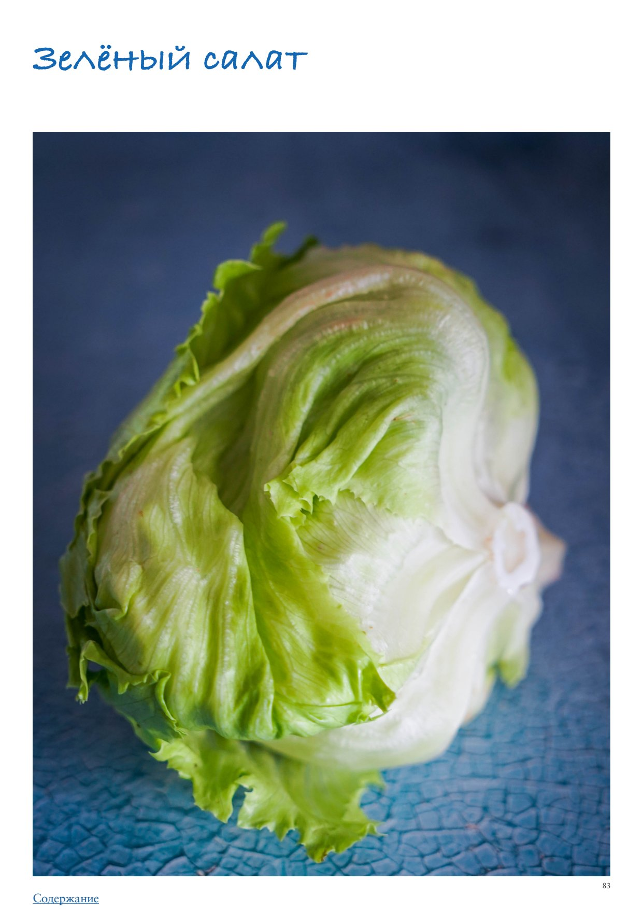

Зеленый салат
Давно прошли те времена, когда листья салата ассоциировались лишь с сидящими на диете дамочками, тоскливо жующими все только самое низкокалорийное. Да, зеленый салат подходит для похудения в том числе, но мы ценим его главным образом за способность выступать идеальным «чистым холстом» для самых разнообразных блюд, и прежде всего, конечно, для салатов, что следует из названия этих овощей. Достаточно заправить смесь крупно нарванных салатных листьев самой простой заправкой винегрет из оливкового масла, лимонного сока, дижонской горчицы, соли и перца (по желанию туда можно влить ложечку меда), и уже готов отличный вкусный и полезный салат. Количество вариаций огромно — блюдо на основе зеленого салата является ярким примером «конструктора»: основа в виде одного или нескольких видов салатной зелени + белковые топинги (ломтики готового мяса, птицы, морепродуктов, консервированный тунец, яйца, жареный бекон, различные сыры) + овощи и фрукты (помидоры, огурцы, редис, зеленый горошек, авокадо, артишоки, спаржа, грибы, цитрусы, манго, яблоки, персики и нектарины) + заправка (винегрет, домашний майонез, легкий йогуртовый соус с зеленью, просто хорошее оливковое масло) + дополнительные элементы (зерна граната, жареные кедровые орешки и другие орехи и семечки, сухой жареный шалот, ароматная зелень). И это далеко не полный перечень возможных ингредиентов. В случае с салатами приятным бонусом является то, что не нужно особо задумываться о пропорциях, можно добавлять все на глаз, а потому здесь открывается поле для экспериментов, даже если вы еще не очень уверенно готовите. Единственное, нужно помнить, что некоторые продукты друг с другом не сочетаются (как, например, креветки и лесные грибы или ростбиф с клубникой или персиками), и избегать этих комбинаций. Виды зеленого салата Зеленый салат делится на две большие группы: листовой (розетка из листьев, например латук, дуболистный, фризе) и кочанный (айсберг, романо, радиккьо). Существует множество разновидностей и сортов салатной зелени, мы опишем только самые известные и доступные во всем мире. Айсберг — кочанный салат с очень хрустящими листьями. Цвет одного кочана варьируется от белого у основания до зеленого сверху. Листья хорошо держат форму, могут сочетаться с насыщенными по вкусу заправками, например домашним майонезом или сырным соусом. Дуболистный (оаклиф) — сочные, нежные и мягкие листья этого салата формой напоминают дубовые, отсюда и название. Может быть чисто зеленым или с коричневато-фиолетовыми тонами. Вкус с очень легкой горчинкой и тонкими ореховыми нотами. Сочетается с заправкой винегрет и заправками на основе ореховых масел. Кале (кейл) — по сути, это не салат, а листовая разновидность капусты, но по кулинарным свойствам она ближе к зеленому салату. В сыром виде темно-зеленые волнистые листья кале жесткие и горьковатые, поэтому перед использованием в салатах в свежем виде рекомендуется помассировать ее с солью. Кале можно тушить, жарить и делать из нее чипсы. Она хорошо сочетается с густыми и маслянистыми заправками, сладкими ингредиентами. Корн (маш-салат) — листовой салат с маленьким округлыми темно-зелеными листьями со сладковато-ореховым вкусом. Сочетается со сладкими цитрусами, орехами, сырами с пикантным вкусом, его можно заправлять простой смесью оливкового масла и лимонного сока.
Кос-латук (литл джем, маслянистый кочанный) — эффектные маленькие кочанчики этого салата с нежными и глянцевыми, будто «маслянистыми» на вид листьями с почти нейтральным, но приятным вкусом удобно разбирать на листья и использовать как «лодочки» для подачи салатов и закусок. Кресс-салат — растение из семейства горчичных с пикантным перечным вкусом и характерным «мясным» ароматом. В России чаще встречается в виде пророщенной микро-зелени, на Западе больше распространен крупный кресс-салат. Хорошо сочетается с жареным мясом и с овощами с нейтральным вкусом (белокочанная или пекинская капуста, огурцы). Очень вкусным получается сливочное масло, смешанное с измельченным кресс-салатом, кружочек такого охлажденного масла великолепно дополнит горячий стейк. Латук — округлый кочан этого салата очень рыхлый, цвет светло-зеленый, иногда с желтоватым оттенком. Листья мягкие, нежные, с практически нейтральным вкусом. Сочетается с заправкой винегрет, сладковатыми заправками, пряными травами и цитрусами, а также зернами граната. Лолло росса — листовой салат с сильно изрезанными на концах, «кудрявыми» листьями, цвет одного растения варьируется от светло-зеленого до коричневато-красного. Хорошо сочетается с грушами и другими фруктами, а также с ореховым маслом в качестве заправки. Мангольд — листья свеклы, которую выращивают только ради них, а не ради корнеплодов. Зеленые листья с пурпурными прожилками нежные, с приятным сладковатым вкусом и характерным свекольным ароматом. Мангольд отлично сочетается со всем, с чем «дружит» свекла: орехи, мягкие сыры, фета, оливковое масло. Мизуна (японская капуста) — салатная зелень родом из Японии, внешне напоминает рукколу, с зелеными слегка рассеченными листьями. Вкус островатый, пикантный. Мизуна хорошо играет в сочетании с другими, более нейтральными салатными листьями. Обычный листовой — тот самый, который чаще всего продается в супермаркетах в горшочке. Листья очень нежные и мягкие, волнистые по краям. Цвет светло-зеленый. Сочетается с простыми заправками в стиле винегрет. Радиккьо — салат с пурпурными листьями и выраженной горечью во вкусе. Из-за горечи редко выступает главным элементом блюда, обычно дополняет другую салатную зелень. Его можно тушить и жарить. Хорошо сочетается со сливочными заправками, майонезом и сладкими ингредиентами (например, сухофруктами, медом, апельсинами). Отлично «дружит» с тимьяном. Романо — внешне представляет собой очень рыхлый и сильно вытянутый кочан с довольно плотными неровными листьями. Вкус слегка терпкий. Хорошо держит форму в салатах, его даже можно, разрезав пополам, поджаривать на гриле. К романо подходят заправки с мощным вкусом, например, из сыра с голубой плесенью. Классическая основа салата «Цезарь». Руккола — небольшие вытянутые рассеченные листья этой салатной зелени обладают выраженным пряным, перечным вкусом. Сочетается с жирными, солеными и сладкими блюдами, маслянистыми заправками, бальзамическим уксусом, цитрусами, авокадо, помидорами. Традиционное дополнение к классическому карпаччо. Салатный цикорий (эндивий) — удлиненные кочанчики в форме наконечника копья. Могут быть белыми с желтоватым или пурпурным оттенком. Обладают выраженной горечью. Эндивий сочетается с густыми, насыщенными заправками. Этот салат можно жарить, запекать и тушить. Фризе — салат с очень сильно изрезанными узкими листьями с пикантной горчинкой. Цвет одного растения варьируется от белого у основания до зеленого. Отлично дополняет жареное
мясо, бекон, морепродукты, мягкие сыры, помидоры черри и авокадо. Заправка для фризе в идеале должна быть сладковатой или кисло-сладкой. Шпинат — еще один «не салат», а листовой овощ, но часто использующийся в свежем виде как салатная зелень. Молодой шпинат нежный, более зрелый становится жестче, у него нужно обязательно удалять стебли и подвергать термической обработке (тушить или обжаривать). Темно-зеленые листья свежего шпината сочетаются с орехами, мягкими сырами, творогом, грибами, цитрусами. Именно шпинат используется как натуральный зеленый краситель для пасты и соусов. Как выбирать В продаже салатная зелень сейчас есть всегда, круглый год, в разных видах: целые головки или кочанчики, отдельные целые листья, нарезанный салат, салатные смеси (в них салат уже мытый). По возможности лучше выбирать целый, так как он гораздо дольше сохраняет свежесть, а нарезанный сразу начинает окисляться. Любой зеленый салат должен быть свежим и упругим, не вялым, без темных пятен. Если покупаете салат в закрытой пластиковой упаковке, внимательно его осмотрите — он должен быть свежим, без вялых, подгнивших и окислившихся листочков. Как хранить Иногда, особенно на фермерских рынках, салат продается с корешками. Перед хранением их нужно хорошо промыть под проточной водой, чтобы на листьях салата не было песка или грязи. Любой зеленый салат хранится в отделении для овощей холодильника завернутым в бумажные полотенца до 3–5 дней. Как подготавливать Любой салат перед использованием нужно аккуратно промыть под проточной водой или поместить в большую миску с холодной водой и дать отмокнуть, затем достать (не сливать воду из миски, потому что тогда грязь останется на салатных листьях) и обсушить — лучше всего использовать для этого специальную крутящуюся сушилку для салата. У некоторых видов салата нужно удалить жесткие стебли, например, у зрелого шпината или мангольда. Если предполагается готовить салат, листья лучше не резать, а рвать руками, в этом случае они дольше сохранят форму и не увянут. Лайфхаки